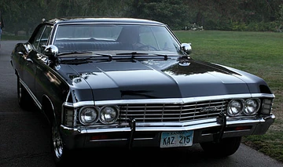
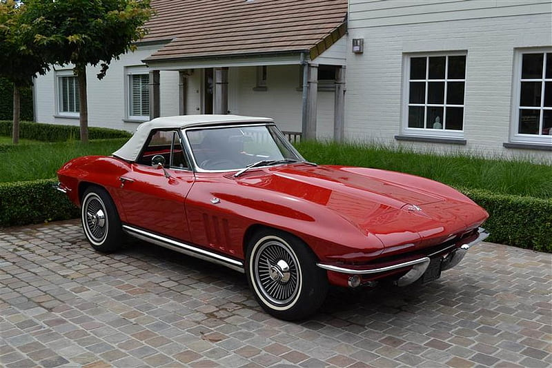

CHEVROLET IMPALA (1965-1970) Fourth Generation

Since its introduction in 1958, the Chevrolet Impala has represented the peak of luxury and accessibility within the American automotive industry. Unlike the raw, track-focused aggression of the Charger or the lightweight agility of the Mustang, the Impala is not a Muscle Car; it is a "Full-Size Cruiser" icon. It was meticulously designed for long-distance journeys across the American highways, emphasizing supreme ride quality and imposing road presence with its massive dimensions and refined suspension systems. The mid-1960s, in particular, was the Impala’s most dominant period, where it became the first car in history to sell over one million units in a single year (1965), a record that stood for decades.The cultural impact of the Impala is equally unmatched. The 1964 model remains a cornerstone of the "Lowrider" culture, celebrated for its clean, horizontal lines and iconic six-taillight rear arrangement. Meanwhile, the 1967 Impala Sport Sedan achieved worldwide legendary status as the "Metallicar" in the cult series Supernatural, where its distinct sloping roofline and "Coke bottle" styling became synonymous with reliability and dark elegance.From a technical standpoint, the Fourth Generation was a masterpiece of choice. While it served as a comfortable family sedan, Chevrolet also offered the legendary "SS" (Super Sport) package, which could be equipped with the monstrous 427 Turbo-Jet V8 engine. This transformed the massive cruiser into a sleeper performance machine capable of surprising much smaller sports cars. Whether it was the plush interior options or the roar of a Big-Block engine under its long hood, the Impala remains a definitive reflection of the 1960s American lifestyle—a perfect marriage of prestige, comfort, and untapped power.
Technical Specifications
| Chevrolet Impala's Body Types |
|---|
| 2-Door Hardtop (Sport Coupe) |
| 2-Door Convertible |
| 2-Door Sedan |
| 4-Door Hardtop (Sport Sedan) |
| 4-Door Station Wagon |
| 4-Door Sedan |
| Engine Type & Name | Displacement | Horsepower (HP) |
|---|---|---|
| Turbo Thrift I6 | 250 / 4.1L | 140 – 155 HP |
| Turbo Fire V8 | 283 / 4.6L | 195 HP |
| Turbo Fire V8 | 307 / 5.0L | 200 HP |
| Turbo Fire V8 | 327 / 5.4L | 250 HP to 350 HP |
| Turbo Fire V8 | 350 / 5.7L | 255 HP to 300 HP |
| Turbo-Jet V8 | 396 / 6.5L | 325 HP to 375 HP |
| Turbo Fire V8 | 400 / 6.6L | 265 HP |
| Turbo-Jet V8 | 409 / 6.7L | 340 HP to 425 HP |
| Turbo-Jet V8 | 427 / 7.0L | 385 HP to 425 HP |
| Color Name | HEX Code |
|---|---|
| Rally Red | #BB232A |
| Marina Blue | #2A5694 |
| Kalamazoo Green | #4C6251 |
| Butternut Yellow | #F7C969 |
| Silver Nist | #A4A6A7 |
| Ermine White | #F1F1F0 |
| Black (Supernatural) | #1A1A1A |
| Transmissions |
|---|
| 3-Speed Manuel |
| 4-Speed Manuel |
| 2-Speed Powerglide Auto |
| 3-Speed Turbo Hydramatic (TH-400) |
| 3-Speed Turbo Hydramatic (TH-350) |
CHEVROLET CORVETTE (1963-1967) second generation

The Chevrolet Corvette is a legend that has secured its place in American automotive history as a pure sports car, and its Second Generation, famously known as the "C2 Sting Ray," represents the absolute pinnacle of this legacy. Launched in 1963, the Sting Ray arrived with a futuristic, razor-sharp aerodynamic design that was completely distinct from the rounded, European-influenced lines of the previous generation. The most striking and controversial feature of this era was the "Split Rear Window," which was unique to the 1963 coupe; while it was a masterpiece of styling, it was removed in subsequent years due to visibility concerns, making the '63 Split-Window one of the most valuable and sought-after collector cars in the world.Beyond its breathtaking aesthetics, the C2 was a pioneer in high-performance engineering. It featured a lightweight fiberglass body that resisted rust and significantly reduced weight, paired with the revolutionary introduction of independent rear suspension—a feature that allowed the Corvette to challenge European exotics on winding tracks rather than just dominating drag strips. This generation also introduced hidden "flip-up" headlights, a design cue that would define the Corvette's silhouette for the next four decades.Under the hood, the C2 evolved from the reliable Small-Block V8s to the legendary "Big-Block" era. The 1967 model, in particular, saw the birth of the L88 engine—a race-spec powerhouse officially rated at 430 horsepower but widely known to produce over 500 in reality. These "Big-Block" cars featured the iconic "Stinger" hood scoop, signaling the monstrous power underneath. Representing a perfect blend of space-age design and raw track-ready performance, the C2 Sting Ray remains the definitive blueprint for the American sports car, standing as a symbol of mid-century innovation and timeless speed.
Technical Specifications
| Chevrolet Corvette's Body Types |
|---|
| 2 Door Coupe |
| 2 Door Cabrio |
| Engine Type & Name | Displacement | Horsepower (HP) |
|---|---|---|
| Small Block V8 | 327 / 5.4L | 250 hp |
| Small Block V8 | 327 / 5.4L | 300 hp |
| Small Block V8 (Fuel Inj.) | 327 / 5.4L | 360-375 hp |
| Big Block V8 | 427 / 7.0L | 390 hp |
| Big Block V8 (L72) | 427 / 7.0L | 425 hp |
| Big Block V8 (L88) | 427 / 7.0L | 430 hp |
| Color Name | HEX Code |
|---|---|
| Riverside Red | #8F1D2B |
| Daytona Blue | #343E5E |
| Tuxedo Black | #0A0A0A |
| Ermine White | #F1F1F0 |
| Silver Pearl | #A4A4A7 |
| Marlboro Maroon | #562325 |
| Sunfire Yellow | #F0A500 |
| Transmissions |
|---|
| 3-Speed Manuel |
| 4-Speed Manuel |
| 4-Speed Muncie M22 Manuel |
| 2-Speed Powerglide Auto |
| 3-Speed Turbo Hydramatic Auto |